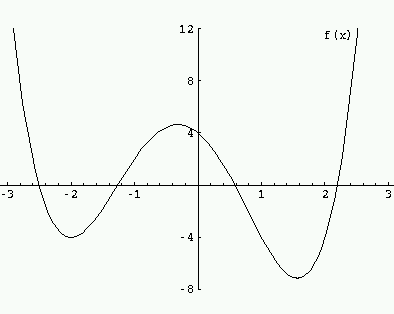
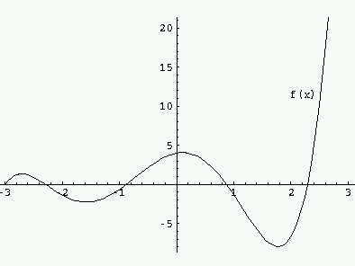

The problem of determining the size v(k,g) of a (k,g)-cage was posed in 1959 by Kárteszi who noticed that v(3,5) = 10 was realized by the Petersen graph. Earlier, Tutte (1947) had already studied cubic cages.
Sachs (1963) first showed that v(k,g) is finite, and Erdős & Sachs (1963) gave an upper bound.
(i) The (2,g)-cage is the circuit Cg, and v(2,g) = g.
(ii) The (k,3)-cage is the complete graph Kk+1, and v(k,3) = k + 1.
(iii) The (k,4)-cage is the complete bipartite graph Kk,k, and v(k,4) = 2k.
(iv) If k = q + 1 for a prime power q, then a (k,6)-cage is the incidence graph of a projective plane PG(2,q), and v(k,6) = 2(q2 + q + 1). These graphs have eigenvalues ±(q+1), ±√q, with multiplicities 1, q(q+1), respectively. The (3,6)-cage is also known as the Heawood graph.
(v) If k = q + 1 for a prime power q, then a (k,8)-cage is the incidence graph of a generalized quadrangle GQ(q,q), and v(k,8) = 2(q + 1)(q2 + 1). These graphs have eigenvalues ±(q+1), ±√(2q), 0 with multiplicities 1, q(q+1)2/2, q(q2+1), respectively. The (3,8)-cage is also known as Tutte's 8-cage, or the Tutte-Coxeter graph.
(vi) If k = q + 1 for a prime power q, then a (k,12)-cage is the incidence graph of a generalized hexagon GH(q,q), and v(k,12) equals 2(q + 1)(q4 + q2 + 1). (Benson) These graphs have eigenvalues ±(q+1), ±√(3q), ±√q, 0 with multiplicities 1, q(q+1)2(q2+q+1)/6, q(q+1)2(q2–q+1)/2 and 2q(q4+q2+1)/3, respectively.
| k\g | 3 | 4 | 5 | 6 | 7 | 8 | 9 | 10 | 11 | 12 | |
| 3 | 4 | 6 | 10 | 14 | 24 | 30 | 58 | 70 | 112 | 126 | |
| 4 | 5 | 8 | 19 | 26 | 67 | 80 | 728 | ||||
| 5 | 6 | 10 | 30 | 42 | 170 | 2730 | |||||
| 6 | 7 | 12 | 40 | 62 | 312 | 7812 | |||||
| 7 | 8 | 14 | 50 | 90 |
The unique (3,3)-cage is the complete graph K4, and v(3,3) = 4.
The unique (3,4)-cage is the complete bipartite graph K3,3, and v(3,4) = 6.
The unique (3,5)-cage is the Petersen graph, and v(3,5) = 10.
The unique (3,6)-cage is the Heawood graph. the incidence graph of the Fano plane, and v(3,6) = 14.
The unique (3,7)-cage is the McGee graph, and v(3,7) = 24.
The unique (3,8)-cage is the Tutte-Coxeter graph, also known as Tutte's 8-cage, the incidence graph of the generalized quadrangle GQ(2,2), and v(3,8) = 30.
There are 18 (3,9)-cages, and v(3,9) = 58. The first such cage was found by Biggs & Hoare (1980), the fact that v(3,9) = 58 and the remaining examples are due to Brinkmann, McKay & Saager (1995).
There are 3 (3,10)-cages, all bipartite, and v(3,10) = 70. This is due to O'Keefe & Wong (1980). Two of these three (3,10)-cages are cospectral with characteristic polynomial (x2-9)(x2-6)(x2-2)(x2-1)4(x4-6x2+2)5(x4-6x2+3)4(x4-6x2+6)5. The third, historically the first, found by Balaban (1973), has characteristic polynomial (x2-9)(x2-6)2(x2-5)4(x2-4)(x2-2)2(x2-1)8x2(x4-6x2+3)8.
Brendan McKay and Wendy Myrvold showed that v(3,11) = 112 (see McKay-Myrvold-Nadon (1998)), and they showed in 2003 (unpublished) that the (3,11)-cage is unique. This unique (3,11)-cage is due to Balaban (1973).
The unique (4,5)-cage is the Robertson graph, and v(4,5) = 19.
The unique (4,6)-cage is the point-line incidence graph of PG(2,3), and v(4,6) = 26.
Geoff Exoo, Brendan McKay and Wendy Myrvold showed in 2007 (unpublished) that v(4,7) = 67. One example of a (4,7)-cage is known.
One has v(5,5) = 30, and there are precisely four (5,5)-cages. One of them is known as the Robertson-Wegner graph. Its group is A5×2 with orbits 10+20. A description: The 30 vertices are the 20 vertices of the dodecahedron and the 10 4-subsets of the dodecahedron that have all internal distances 3; the adjacencies are the obvious ones: the dodecahedron is an induced subgraph of valency 3, each 4-subset is adjacent to its 4 elements and to the antipodal 4-subset.
The unique (7,6)-cage is the unique 3-fold cover with girth 6 of the incidence graph of the points and planes of PG(3,2), and v(7,6) = 90. Its group is 3.Alt(7).2. It is the incidence graph of the elliptic semiplane found by Baker (1978). It was rediscovered by O'Keefe & Wong (1981).
| # | k | g | v | |G| | orbits | distance distribution | spectrum |
| 1/1 | 3 | 3 | 4 | 24 | tra | 1+3 | –13 3 |
| 1/1 | 3 | 4 | 6 | 72 | tra | 1+3+2 | bipartite, 04 3 |
| 1/1 | 3 | 5 | 10 | 120 | tra | 1+3+6 | –24 15 3 |
| 1/1 | 3 | 6 | 14 | 336 | tra | 1+3+6+4 | bipartite, √26 3 |
| 1/1 | 3 | 7 | 24 | 32 | 8+16 | 1+3+6+12+2 | –½(1+√17) –2.342924 –2 –12 –0.4706834 03 ½(–1+√17) 1.813614 23 3 |
| 1/1 | 3 | 8 | 30 | 1440 | tra | 1+3+6+12+8 | bipartite, 010 29 3 |
| 1/18 | 3 | 9 | 58 | 4 | 4*1+5*2+11*4 | 1+3+6+12+24+8+4 (2x) 1+3+6+12+24+9+3 (2x) 1+3+6+12+24+10+2 (10x) 1+3+6+12+24+11+1 (22x) 1+3+6+12+24+12 (22x) |
–2.75468 –2.58854 ... 2.38349 2.38868 3 |
| 2/18 | 3 | 9 | 58 | 2 | 4*1+27*2 | 1+3+6+12+24+9+3 (4x) 1+3+6+12+24+10+2 (14x) 1+3+6+12+24+11+1 (28x) 1+3+6+12+24+12 (12x) |
–2.61301 –2.59308 ... 2.43933 2.44196 3 |
| 3/18 | 3 | 9 | 58 | 24 | 4+6+2*12+24 | 1+3+6+12+24+9+3 (4x) 1+3+6+12+24+10+2 (12x) 1+3+6+12+24+11+1 (24x) 1+3+6+12+24+12 (18x) |
–2.559083 –2.557332 ... 2.392422 2.408363 3 |
| 4/18 | 3 | 9 | 58 | 4 | 3*2+13*4 | 1+3+6+12+24+9+3 (2x) 1+3+6+12+24+10+2 (22x) 1+3+6+12+24+11+1 (18x) 1+3+6+12+24+12 (16x) |
–2.75987 –2.62976 ... 2.38547 2.45953 3 |
| 5/18 | 3 | 9 | 58 | 4 | 5*2+12*4 | 1+3+6+12+24+10+2 (8x) 1+3+6+12+24+11+1 (34x) 1+3+6+12+24+12 (16x) |
–2.75991 –2.58967 ... 2.36044 2.45807 3 |
| 6/18 | 3 | 9 | 58 | 2 | 2*1+28*2 | 1+3+6+12+24+10+2 (11x) 1+3+6+12+24+11+1 (36x) 1+3+6+12+24+12 (11x) |
–2.73095 –2.62527 ... 2.38714 2.45704 3 |
| 7/18 | 3 | 9 | 58 | 1 | 58*1 | 1+3+6+12+24+9+3 (2x) 1+3+6+12+24+10+2 (19x) 1+3+6+12+24+11+1 (20x) 1+3+6+12+24+12 (17x) |
–2.66844 –2.62445 ... 2.39504 2.45387 3 |
| 8/18 | 3 | 9 | 58 | 2 | 4*1+27*2 | 1+3+6+12+24+10+2 (8x) 1+3+6+12+24+11+1 (18x) 1+3+6+12+24+12 (32x) |
–2.63455 –2.60469 ... 2.40412 2.4409 3 |
| 9/18 | 3 | 9 | 58 | 1 | 58*1 | 1+3+6+12+24+8+4 (1x) 1+3+6+12+24+9+3 (4x) 1+3+6+12+24+10+2 (26x) 1+3+6+12+24+11+1 (22x) 1+3+6+12+24+12 (5x) |
–2.66108 –2.61225 ... 2.44088 2.44829 3 |
| 10/18 | 3 | 9 | 58 | 2 | 2*1+28*2 | 1+3+6+12+24+11+1 (14x) 1+3+6+12+24+12 (44x) |
–2.7354 –2.67555 ... 2.36072 2.42256 3 |
| 11/18 | 3 | 9 | 58 | 1 | 58*1 | 1+3+6+12+24+11+1 (16x) 1+3+6+12+24+12 (42x) |
–2.74602 –2.64829 ... 2.36304 2.42366 3 |
| 12/18 | 3 | 9 | 58 | 2 | 2*1+28*2 | 1+3+6+12+24+9+3 (2x) 1+3+6+12+24+10+2 (18x) 1+3+6+12+24+11+1 (20x) 1+3+6+12+24+12 (18x) |
–2.64207 –2.61726 ... 2.3938 2.45694 3 |
| 13/18 | 3 | 9 | 58 | 1 | 58*1 | 1+3+6+12+24+8+4 (1x) 1+3+6+12+24+9+3 (4x) 1+3+6+12+24+10+2 (21x) 1+3+6+12+24+11+1 (26x) 1+3+6+12+24+12 (6x) |
–2.6812 –2.61521 ... 2.41845 2.44375 3 |
| 14/18 | 3 | 9 | 58 | 12 | 1+3*3+4*6+2*12 | 1+3+6+12+24+10+2 (18x) 1+3+6+12+24+11+1 (12x) 1+3+6+12+24+12 (28x) |
–2.59647 –2.587342 ... 2.370072 2.423052 3 |
| 15/18 | 3 | 9 | 58 | 8 | 2*1+2*2+5*4+4*8 | 1+3+6+12+24+8+4 (1x) 1+3+6+12+24+9+3 (8x) 1+3+6+12+24+10+2 (2x) 1+3+6+12+24+11+1 (16x) 1+3+6+12+24+12 (31x) |
–2.65867 –2.59599 ... 2.400682 2.41573 3 |
| 16/18 | 3 | 9 | 58 | 2 | 4*1+27*2 | 1+3+6+12+24+11+1 (2x) 1+3+6+12+24+12 (56x) |
–2.73515 –2.68142 ... 2.33193 2.39672 3 |
| 17/18 | 3 | 9 | 58 | 6 | 2*2+4*3+7*6 | 1+3+6+12+24+11+1 (8x) 1+3+6+12+24+12 (50x) |
–2.69512 –2.64036 ... 2.3511 2.36234 3 |
| 18/18 | 3 | 9 | 58 | 6 | 1+3*3+8*6 | 1+3+6+12+24+10+2 (3x) 1+3+6+12+24+11+1 (6x) 1+3+6+12+24+12 (49x) |
–2.60086 –2.57562 ... 2.37225 2.399392 3 |
| 1/3 | 3 | 10 | 70 | 120 | 5+15+20+30 | 1+3+6+12+24+20+4 | bipartite, 0.5951885 0.7419644 14 1.126035 √2 2.175335 2.334414 2.376085 √6 3 |
| 2/3 | 3 | 10 | 70 | 24 | 1+3+4+6+8+2*12+24 | 1+3+6+12+24+20+4 | bipartite, 0.5951885 0.7419644 14 1.126035 √2 2.175335 2.334414 2.376085 √6 3 |
| 3/3 | 3 | 10 | 70 | 80 | 10+20+40 | 1+3+6+12+24+20+4 | bipartite, 02 0.7419648 18 √22 2 √54 2.334418 √62 3 |
| 1/1 | 3 | 11 | 112 | 64 | 2*8+2*16+2*32 | 1+3+6+12+24+48+12+4+2 (16x) 1+3+6+12+24+48+16+2 (32x) 1+3+6+12+24+48+18 (64x) |
–2.85577 –2.593058 –√65 –2.191174 –1.813612 –1.718958 –√212 –0.5767134 –0.321637 –0.3061128 012 0.4706832 1.225038 1.264384 √212 2.17741 2.342922 2.393098 √65 2.50354 3 |
| 1/1 | 3 | 12 | 126 | 12096 | 63+63 | 1+3+6+12+24+48+32 | bipartite, 028 √227 √621 3 |
| 1/1 | 4 | 5 | 19 | 24 | 3+4+12 | 1+4+12+2 | –½(1+√21) –½(1+√17)2 –½(1+√13)2 –√32 –½(1+√5) ½(–1+√5) 12 ½(–1+√13)2 ½(–1+√17)2 √32 ½(–1+√21) 4 |
| 1/1 | 4 | 6 | 26 | 11232 | tra | 1+4+12+9 | bipartite, √312 4 |
| 1/? | 4 | 7 | 67 | 4 | 1+11*2+11*4 | 1+4+12+36+12+2 (10x) 1+4+12+36+13+1 (8x) 1+4+12+36+14 (49x) |
-3.45504 -3.02055 ... 2.63777 2.68738 4 |
| 1/1 | 4 | 8 | 80 | 51840 | 40+40 | 1+4+12+36+27 | bipartite, 030 √624 4 |
| 1/? | 4 | 12 | 728 | 8491392 | tra | 1+4+12+36+108+324+243 | bipartite, 0182 √3168 3104 4 |
| 1/4 | 5 | 5 | 30 | 120 | 10+20 | 1+5+20+4 | –½(1+√21)8 –√53 –12 15 ½(–1+√21)8 √53 5 |
| 2/4 | 5 | 5 | 30 | 20 | 2*5+2*10 | 1+5+20+4 | –34 –2.706362 –2.466732 –2.122332 –1.777482 –1 0.7774842 1.122332 1.466732 1.706362 28 5 |
| 3/4 | 5 | 5 | 30 | 30 | 15+15 | 1+5+20+4 | (–1–√5)2 –2.706364 –√52 –2.122334 –1 1.122334 (–1+√5)2 1.706364 24 √52 5 |
| 4/4 | 5 | 5 | 30 | 96 | 6+24 | 1+5+20+4 | –32 (–1–√3)4 –½(1+√17)3 –23 0 (–1+√3)4 ½(–1+√17)3 29 5 |
| 1/1 | 5 | 6 | 42 | 241920 | tra | 1+5+20+16 | bipartite, 220 5 |
| 1/1 | 5 | 8 | 170 | 3916800 | tra | 1+5+20+80+64 | bipartite, 068 √850 5 |
| 1/? | 5 | 12 | 2730 | 503193600 | 1365+1365 | 1+5+20+80+320+1280+1024 | bipartite, 0728 2650 2√3350 5 |
| 1/1 | 6 | 5 | 40 | 480 | tra | 1+6+30+3 | –312 –25 14 218 6 |
| 1/1 | 6 | 6 | 62 | 744000 | tra | 1+6+30+25 | bipartite, √530 6 |
| 1/1 | 6 | 8 | 312 | 9360000 | 156+156 | 1+6+30+150+125 | bipartite, 0130 √1090 6 |
| 1/? | 6 | 12 | 7812 | 5859000000 | 3906+3906 | 1+6+30+150+750+3750+3125 | bipartite, 02170 √51890 √15930 6 |
| 1/1 | 7 | 5 | 50 | 252000 | tra | 1+7+42 | –321 228 7 |
| 1/1 | 7 | 6 | 90 | 15120 | tra | 1+7+42+38+2 | bipartite, 214 √730 7 |
Let g = 2t+1 be odd. Let Ai be the matrix describing distance i. Put J = A0 + A1 + ... + At + E. Then E is the adjacency matrix of a graph of valency e, where e is the excess of v over the Moore bound. These Ai can be expressed as polynomial in A using A2 = kI + A2 and AAi = (k–1)Ai–1 + Ai+1 for i < t. Now the definition of E becomes E = J – f(A). If λ is an eigenvalue of A different from k, then –f(λ) is an eigenvalue of E, so that |f(λ)| ≤ e. If the Moore lower bound f(k) = v–e for v is more than v/2, then v–e > e and λ is bounded away from k.
For example, in case k=3, g=9, we find f(x) = x4+x3–6x2–4x+4, with f(3) = 46, and the excess is v–f(k) = 58–46 = 12. Now |f(λ)| ≤ e implies –2.913 < λ < 2.517, showing that λ cannot be very close to 3.

This argument is due to Biggs (1980), who used it to give a lower bound for e.
The same inequality |f(λ)| ≤ e can also be given in case of even girth. Let g = 2t+2 be even. Put J = A0 + A1 + ... + At + (1/k)B + E, with Ai as before, and B defined by AAt = (k–1)At–1 + B. Again E = J – f(A). Note that E is nonnegative: Bxy is, for d(x,y)=t+1, the number of paths of length t+1 from x to y, so the entries of (1/k)B are at most 1.
For example, in case k=3, g=10, we find f(x) = (1/3)x5+x4–2x3–6x2+(4/3)x+4, with f(3) = 62, and the excess is v–f(k) = 70–62 = 8. Now |f(λ)| ≤ e implies –3 ≤ λ < 2.4627. In the examples the largest value of λ is √6 = 2.44949.

R.D. Baker, An elliptic semiplane, J. Combin. Th. (A) 25 (1978) 193-195.
C.T. Benson, Minimal regular graphs of girth eight and twelve, Canad. J. Math. 18 (1966) 1091-1094.
N.L. Biggs, Girth, valency, and excess, Lin. Alg. Appl. 31 (1980) 55-59.
N.L. Biggs, Constructions for Cubic Graphs of Large Girth, Electronic J. of Combinatorics 5 (1998).
N.L. Biggs & M.J. Hoare, A trivalent graph with 58 vertices and girth 9, Discrete Math. 30 (1980) 299-301.
G. Brinkmann, B. D. McKay & C. Saager, The smallest cubic graphs of girth nine, Combinatorics, Probability and Computing 5 (1995) 1-13.
P. Erdős & H. Sachs, Reguläre Graphen gegebener Taillenweite mit minimaler Knotenzahl, Wiss. Z. Uni. Halle (Math. Nat.) 12 (1963) 251-257.
Geoffrey Exoo & Robert Jajcay,
Dynamic cage survey,
Electr. J. Combin.
Geoffrey Exoo, Brendan McKay & Wendy Myrvold, A (4,7)-Cage, preprint, 2007.
A.J. Hoffman & R.R. Singleton, On Moore graphs with diameters 2 and 3, IBM J. Res. Develop. 4 (1960) 497-504.
L.O. James, A combinatorial proof that the Moore (7,2) graph is unique, Utilitas Math. 5 (1974) 79-84.
F. Kárteszi, Piani finiti ciclici come risoluzioni di un certo problema di minimo, Boll. Un. Mat. Ital. (3) 15 (1960) 522-528.
B. D. McKay, W. Myrvold & J. Nadon, Fast Backtracking Principles Applied to Find New Cages, pp. 188-191 in: 9th Annual ACM-SIAM Symposium on Discrete Algorithms, Jan 1998.
W.F. McGee, A minimal cubic graph of girth seven, Canad. Math. Bull. 3 (1960) 149-152.
M. Meringer, Fast generation of regular graphs and construction of cages J. Graph Th. 30 (1999) 137-146.
M. O'Keefe & P.K. Wong, A smallest graph of girth 5 and valency 6, J. Combin. Th. (B) 26 (1979) 145-149.
M. O'Keefe & P.K. Wong, A smallest graph of girth 10 and valency 3, J. Combin. Th. (B) 29 (1980) 91-105.
M. O'Keefe & P.K. Wong, The smallest graph of girth 6 and valency 7, J. Graph Th. 5 (1981) 79-85.
J. Petersen, Sur le théorème de Tait, L'Intermédiaire des Mathématiciens 5 (1898) 225-227.
N. Robertson, The smallest graph of girth 5 and valency 4, Bull. Amer. Math. Soc. 70 (1964) 824-825.
G. Royle, Cubic Cages and Cages of higher valency.
H. Sachs, Regular graphs with given girth and restricted circuits, J. London Math. Soc. 38 (1963) 423-429.
W.T. Tutte, A family of cubical graphs, Proc. Cambridge Philos. Soc. 43 (1947) 459-474.
G. Wegner, A smallest graph of girth 5 and valency 5, J. Combin. Th. (B) 14 (1973) 203-208.
P.K. Wong, On the uniqueness of the smallest graphs of girth 5 and valency 6, J. Graph Th. 3 (1978) 407-409.
P.K. Wong, Cages - a survey, J. Graph Th. 6 (1982) 1-22.
[BCN], Section 6.9.